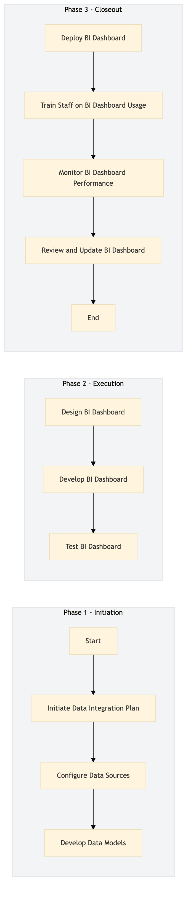

| Role | Steps |
|---|---|
| IT Manager | 1.1 3.1 |
| Data Analyst | 1.2 3.4 |
| Data Engineer | 1.3 |
| BI Analyst | 2.1 |
| BI Developer | 2.2 |
| IT Quality Assurance Analyst | 2.3 |
| Training Coordinator | 3.2 |
| Data Analyst | 3.3 |
| Step | Name | Role | System | Input | Output | KPI | Dec? | Exc? | Pain Point / Risk |
|---|---|---|---|---|---|---|---|---|---|
| 1.1 | Initiate Data Integration Plan | IT Manager | Oracle OPERA Cloud, IDeaS G3 RMS, SynXis CRS | Business requirements document | Data integration plan | Less than 1 week | Y | N | Ensuring compatibility and data accuracy across different systems |
| 1.2 | Configure Data Sources | Data Analyst | Oracle OPERA Cloud, IDeaS G3 RMS, SynXis CRS | Data integration plan | Configured data sources | Less than 2 days | N | Y | Handling large volumes of data and ensuring real-time synchronization |
| 1.3 | Develop Data Models | Data Engineer | Oracle MICROS Simphony, Marriott Bonvoy CRM | Configured data sources | Data models | Less than 3 days | N | Y | Creating complex models that meet business needs |
| 2.1 | Design BI Dashboard | BI Analyst | Microsoft Power BI, Salesforce | Data models | BI dashboard design | Less than 4 days | Y | N | Balancing visual appeal with functional usability |
| 2.2 | Develop BI Dashboard | BI Developer | Microsoft Power BI, Salesforce | BI dashboard design | BI dashboard prototype | Less than 5 days | N | Y | Integrating interactive features and ensuring data accuracy |
| 2.3 | Test BI Dashboard | IT Quality Assurance Analyst | Microsoft Power BI, Salesforce | BI dashboard prototype | Test report | Less than 1 day | Y | N | Identifying and resolving performance issues |
| 3.1 | Deploy BI Dashboard | IT Manager | Microsoft Power BI, Salesforce | Test report | Deployed BI dashboard | Less than 2 days | N | Y | Ensuring seamless deployment across all hotel departments |
| 3.2 | Train Staff on BI Dashboard Usage | Training Coordinator | Microsoft Power BI, Salesforce | Deployed BI dashboard | Training materials and completion certificates | Less than 3 days | Y | N | Customizing training to meet varying user needs |
| 3.3 | Monitor BI Dashboard Performance | IT Manager, Data Analyst | Microsoft Power BI, Salesforce | Deployed BI dashboard | Performance report | Daily monitoring | Y | N | Identifying and resolving ongoing performance issues |
| 3.4 | Review and Update BI Dashboard | IT Manager, Data Analyst | Microsoft Power BI, Salesforce | Performance report | Updated BI dashboard | Monthly review cycle | Y | N | Keeping the dashboard relevant and aligned with business goals |
The IT-DG-08 process involves setting up and maintaining data analytics and BI reporting systems to enhance the digital guest experience at a Marriott full-service hotel. This includes integrating various Marriott systems to provide comprehensive insights for decision-making.